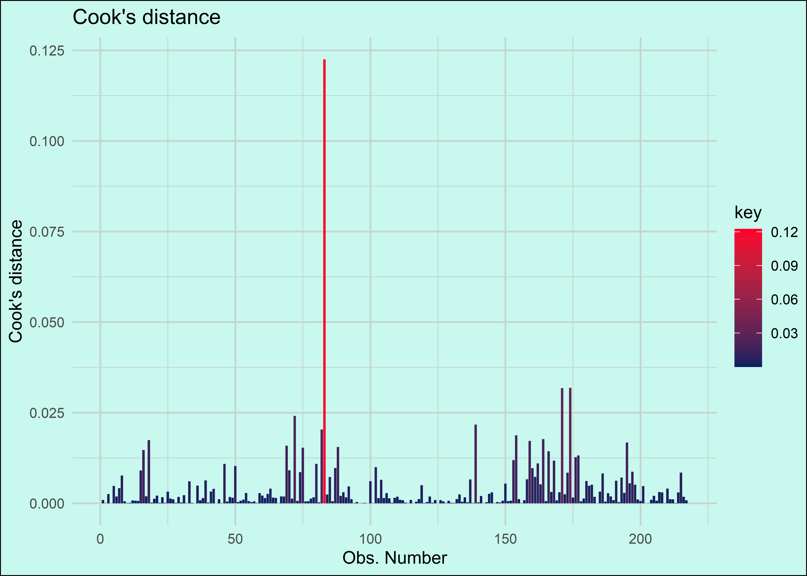
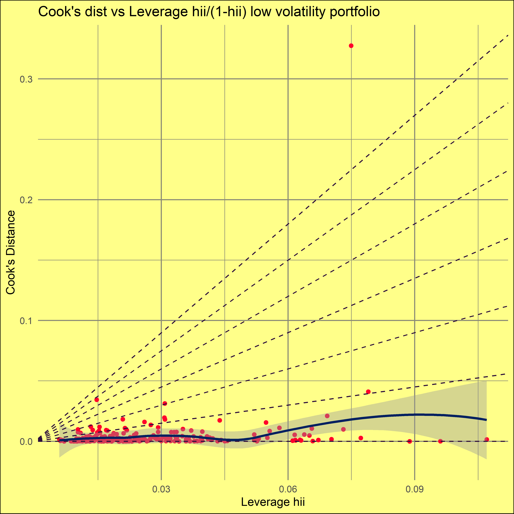
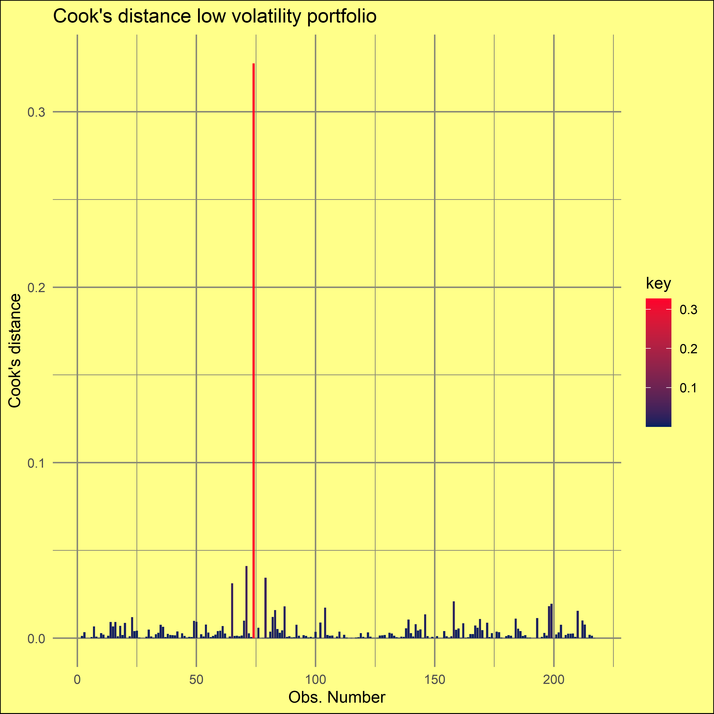
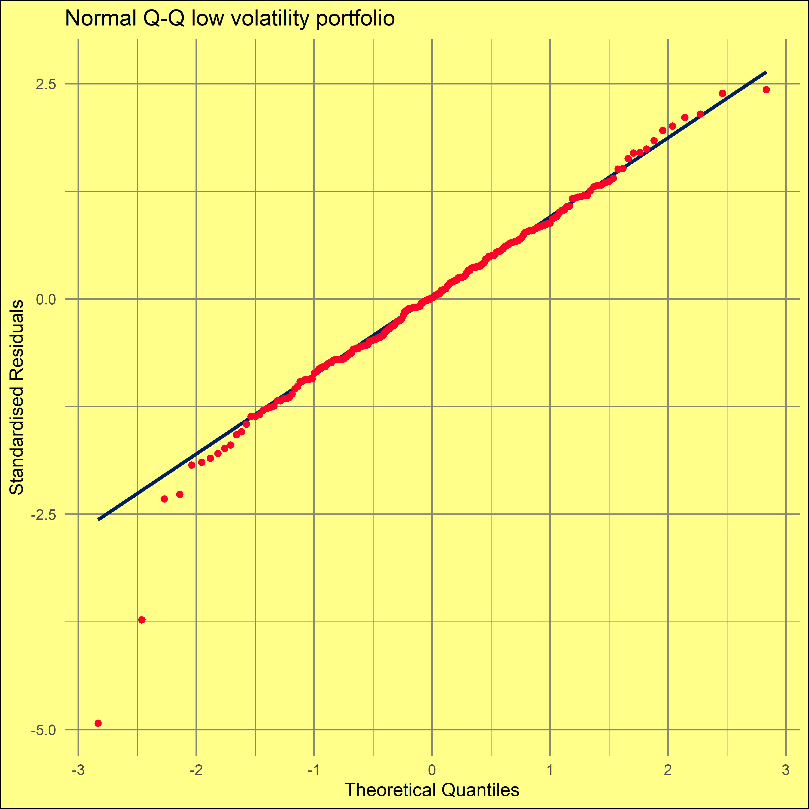
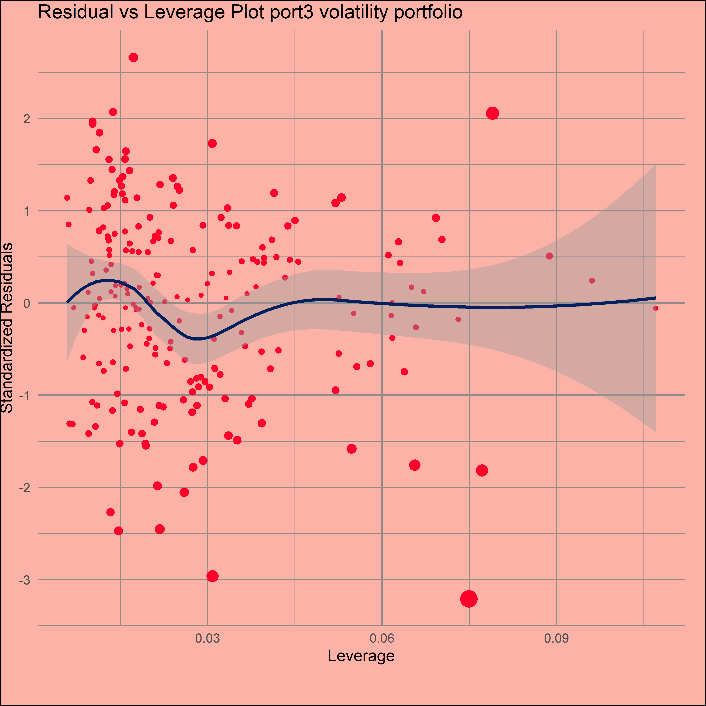

Regression Diagnostics
This is the final part of the project. Here we look at post-regression diagnostic plots, which is an important part of the overall modelling process. We will be using ggplot2, rather than the base plot() function to plot the model diagnostics. As we will be making similar plots, we save a theme that will be added to later plots.
my_theme <- theme(
plot.background=element_rect(fill="#c8f8ee"),
legend.position = "none",
legend.margin = margin(t = -5, r = 0, b = -10, l = 0, unit = "pt"),
panel.grid.major = element_line(colour = "#c4d4d1"),
panel.grid.minor = element_line(colour = "#c4d4d1")
)The above theme simply changes the background of the plot, removes a legend and changes the colour of the grid lines on the plot. It also changes the area of the plot.
Residuals vs Fitted
We start first begin by ploting the residuals against the fitted values. The ggplot() function can now take an lm object to the data argument. we map the fitted values to the x axis, extracting them with .fitted. The residuals are extracted in a similar fashion with .resid, mapped to the y axis.
We use geom_point() to create a scatter plot. Notice that we use color inside geom_point(), rather than inside ggplot() to make sure that only the points get this colour. In addition, we use color outside of an aes() call, so that ggplot uses the actual colour, rather than taking it as an aesthetic, which won’t use the actual colour, but rather take it as a coloring variable.
The color that we have specified is a certain shade of red. If we had used color inside aes(), it would not be red. This is because ggplot(), will simply take it as a unique identifier for each points color. This is why color inside aes() has to be either length 1 (all points have the same code) or same length as the data (each point gets its own identifying color code). The same is true for geom_smooth, which we use to give a line of best fit. This is why there is no scale_color_manual() call in these plots.
ggplot(alphas$high, aes(x = .fitted, y = .resid)) +
geom_point(color = "#ff002b")+
geom_smooth(se=F, color = "#012060")+
theme_minimal()+
labs(title = "Residual vs Fitted", x = "Fitted", y = "Residual")+
my_themeWe can see from the above that there is no discernable relationship between the residuals and the plotted values, which is the desire outcome.
Normal Q-Q Plot
The standard Q-Q diagnostic for linear models plots quantiles of the standardized residuals vs. theoretical quantiles of N(0,1). The geom_qq() function plots the residuals. The snippet below amends that and adds a few cosmetic changes to make the plot more like what one would get from plot(lm(...)).
# extract standardized residuals from the fit
d <- data.frame(std.resid = rstandard(alphas$high))
# calculate 1Q/4Q line
y <- quantile(d$std.resid[!is.na(d$std.resid)], c(0.25, 0.75))
x <- qnorm(c(0.25, 0.75))
slope <- diff(y)/diff(x)
int <- y[1L] - slope * x[1L]
ggplot(data=d, aes(sample=std.resid, colour = "dots"))+
geom_qq_line(colour = "#012060", size = 1)+
geom_qq()+
scale_color_manual(values = c("dots" = "#ff002b"))+
labs(title = "Normal Q-Q", x = "Theoretical Quantiles", y = "Standardised Residuals")+
theme_minimal()+
my_themeThe plot above shows that the standardised residuals are about as close as one can get to a normal distribution, given the data.
Cooks Distance
Cook’s distance is used to see hoe much a single data point influences the model output from an ordinary least-squares regression. Data points that stand out should be checked for validity. Large outliers maybe distort the outcome of a regression. However, it does not necessarily mean that these points should be excluded unless there is a theoretical reason for doing so. If not, it simply means that the outlier is part of the data. The plot below is a classic case in point.
ggplot(alphas$high, aes(seq_along(.cooksd), .cooksd, fill = coredata(.cooksd)))+
geom_bar(stat="identity", position="identity")+
scale_fill_continuous("key", low ="#012060", high = "#ff002b")+
xlab("Obs. Number")+ylab("Cook's distance")+ggtitle("Cook's distance")+
theme_minimal()+
my_theme+
theme(legend.position = "right")
The plot above shows that the point round about the 80 mark or has a massive influence on the data. So we should exclude it right? Maybe not. Let’s first see what period this is show we.
unique(year(port_ret[75:90,1]))[1] 2007 2008As we can see above, it looks like the point comes from the late 2007 period, which around September or so was a period of extreme volatility. This is a high volatility portfolio, so this data point is not an outlier and should not be excluded. The following section also analyses outliers.
Residuals vs Leverage
The residuals vs leverage plot is used to spot outliers from linear regression model. Leverage is simply the distance between one covariate \(X^{(i)}\) and other covariates. In a linear regression, it shows the sensitivity of a fitted \(\hat{y}_i\) to changes in the true response \(y_i\).
ggplot(alphas$high, aes(.hat, .stdresid))+
geom_point(aes(size=coredata(.cooksd), colour = "red"), na.rm=TRUE)+
stat_smooth(method="loess", colour = "#012060", na.rm=TRUE)+
scale_color_manual("", values = c("red" = "#ff002b"), labels = "",
guide = guide_legend(override.aes = list(shape = c(NA),
colour = "#ff002b"))
)+
labs(title = "Residual vs Leverage Plot", x = "Leverage", y ="Standardized Residuals")+
scale_size_continuous("Cook's Distance", range=c(1,5),
guide = guide_legend(override.aes = list( colour = "#ff002b")))+
theme_minimal()+
my_theme+
theme(legend.position=c(0.5,-0.15),
legend.direction = "horizontal",
legend.key.size = unit(1, "mm"),
plot.margin=unit(c(0.1,0.5,1,0),"cm"))The plot above shows the fitted values against the leverage. The size of the points indicates the cooks distance. Almost immediately, we can spot the point from the earlier graph. It is the lone point at the bottom edge of the graph. The point is also the largest, indicating a high cooks distance. However, we stress once more that we can not exclude this point. Extreme returns, particularly of the negative kind, are a feature of market returns.
The spread of the standardised residuals appears to get smaller as the leverage increases, which implies heteroscedasticity and non-linearity. We can inspect this further with the scale location plot.
Scale-Location
The scale-location plot is used to detect heteroscedasticity.
ggplot(alphas$high, aes(.fitted, sqrt(abs(.stdresid))))+
geom_point(colour = "#ff002b", na.rm=TRUE)+
stat_smooth(method="loess", colour = "#012060", na.rm = TRUE)+
labs(title = "Scale-Location", x = "Fitted Value", y = expression(sqrt("|Standardized residuals|")))+
theme_minimal()+
my_themeWe can see that blue line is approximately horizontal. Additionally, the magnitude (or spread) of the standardized residuals does not change drastically as the fitted values change. Both of these things suggest homoscedasticity.
Cooks distance vs Leverage
The last point now plots cooks distance against leverage. Cooks distance shows how much the whole regression model would change if \((x_i, y_i)\) is removed.
ggplot(alphas$high, aes(.hat, .cooksd))+
geom_point(na.rm=TRUE, colour = "#ff002b")+
stat_smooth(method="loess", colour = "#012060", na.rm=TRUE)+
labs(title = "Cook's dist vs Leverage hii/(1-hii)",
x = "Leverage hii", y = "Cook's Distance")+
geom_abline(slope=seq(0,3,0.5), color="#2d0f3c", linetype="dashed")+
theme_minimal()+
my_themeThe plot above shows that the leverage of the most extreme outlier is low, which implies that the influence on the model is low.
With that done, we now redo the same thing for the rest of the regression models (i.e. for each portfolio).
Other volatility portfolio diagnostics
Since the code will be repetitive for the rest of the four portfolios, a for loop would be the most concise approach. We will simply loop through our list of linear models, extracting each one iteratively, to make each of the six plots made above. Then the plots will be saved to include in the html output.
We use different background colours for each plot, just to make it easier to tell the plots apart. The second set of colours is simply for the grid lines, some of the background colors require slightly different line shades. The rest of the code is simply a repetition from the code above.
plot_colours <- vector("list", length = length(alphas[-1]))
names(plot_colours) <- names(alphas[-1])
plot_colours[[1]] <- c("#dbfd9b", "#ffffff")
plot_colours[[2]] <- c("#fdb2a8", "#938b8a")
plot_colours[[3]] <- c("#ce9dff", "#807689")
plot_colours[[4]] <- c("#ffff89", "#898976")
i <- 1
for (mod in alphas[-1]) {
resid_fit <- ggplot(alphas$high, aes(x = .fitted, y = .resid)) +
geom_point(color = "#ff002b")+
geom_smooth(se=F, color = "#012060")+
labs(title = paste("Residual vs Fitted", names(alphas[-1])[i], "volatility portfolio"),
x = "Fitted", y = "Residual")+
theme_minimal()+
theme(
plot.background=element_rect(fill=plot_colours[[i]][1]),
legend.position = "none",
panel.grid.major = element_line(colour = plot_colours[[i]][2]),
panel.grid.minor = element_line(colour = plot_colours[[i]][2])
)
# extract standardized residuals from the fit
d <- data.frame(std.resid = rstandard(mod))
# calculate 1Q/4Q line
y <- quantile(d$std.resid[!is.na(d$std.resid)], c(0.25, 0.75))
x <- qnorm(c(0.25, 0.75))
slope <- diff(y)/diff(x)
int <- y[1L] - slope * x[1L]
q <- ggplot(data=d, aes(sample=std.resid, colour = "dots"))+
geom_qq_line(colour = "#012060", size = 1)+
geom_qq()+
scale_color_manual(values = c("dots" = "#ff002b"))+
labs(title = paste("Normal Q-Q", names(alphas[-1])[i], "volatility portfolio") ,
x = "Theoretical Quantiles", y = "Standardised Residuals")+
theme_minimal()+
theme(
plot.background=element_rect(fill=plot_colours[[i]][1]),
legend.position = "none",
panel.grid.major = element_line(colour = plot_colours[[i]][2]),
panel.grid.minor = element_line(colour = plot_colours[[i]][2])
)
cdist <- ggplot(mod, aes(seq_along(.cooksd), .cooksd, fill = coredata(.cooksd)))+
geom_bar(stat="identity", position="identity")+
scale_fill_continuous("key", low ="#012060", high = "#ff002b")+
labs(title = paste("Cook's distance", names(alphas[-1])[i], "volatility portfolio"),
x = "Obs. Number", y = "Cook's distance")+
theme_minimal()+
theme(
plot.background=element_rect(fill=plot_colours[[i]][1]),
legend.position = "right",
panel.grid.major = element_line(colour = plot_colours[[i]][2]),
panel.grid.minor = element_line(colour = plot_colours[[i]][2])
)
resid_lev <- ggplot(mod, aes(.hat, .stdresid))+
geom_point(aes(size=coredata(.cooksd), colour = "red"), na.rm=TRUE)+
stat_smooth(method="loess", colour = "#012060", na.rm=TRUE)+
scale_color_manual("", values = c("red" = "#ff002b"), labels = "",
guide = guide_legend(override.aes = list(shape = c(NA),
colour = "#ff002b"))
)+
labs(title = paste("Residual vs Leverage Plot", names(alphas[-1])[i], "volatility portfolio"),
x = "Leverage", y ="Standardized Residuals")+
scale_size_continuous("Cook's Distance", range=c(1,5),
guide = guide_legend(override.aes = list( colour = "#ff002b")))+
theme_minimal()+
theme(
plot.background=element_rect(fill=plot_colours[[i]][1]),
legend.margin = margin(t = -5, r = 0, b = -10, l = 0, unit = "pt"),
panel.grid.major = element_line(colour = plot_colours[[i]][2]),
panel.grid.minor = element_line(colour = plot_colours[[i]][2]),
legend.position=c(0.5,-0.15),
legend.direction = "horizontal",
legend.key.size = unit(1, "mm"),
plot.margin=unit(c(0.1,0.5,1,0),"cm"))
scloc <- ggplot(mod, aes(.fitted, sqrt(abs(.stdresid))))+
geom_point(colour = "#ff002b", na.rm=TRUE)+
stat_smooth(method="loess", colour = "#012060", na.rm = TRUE)+
labs(title = paste("Scale-Location", names(alphas[-1])[i], "volatility portofolio"), x = "Fitted Value", y = expression(sqrt("|Standardized residuals|")))+
theme_minimal()+
theme(
plot.background=element_rect(fill=plot_colours[[i]][1]),
legend.position = "none",
panel.grid.major = element_line(colour = plot_colours[[i]][2]),
panel.grid.minor = element_line(colour = plot_colours[[i]][2])
)
cdist_lev <- ggplot(mod, aes(.hat, .cooksd))+
geom_point(na.rm=TRUE, colour = "#ff002b")+
stat_smooth(method="loess", colour = "#012060", na.rm=TRUE)+
labs(title = paste("Cook's dist vs Leverage hii/(1-hii)", names(alphas[-1])[i],
"volatility portfolio"),
x = "Leverage hii", y = "Cook's Distance")+
geom_abline(slope=seq(0,3,0.5), color="#2d0f3c", linetype="dashed")+
theme_minimal()+
theme(
plot.background=element_rect(fill=plot_colours[[i]][1]),
legend.position = "none",
panel.grid.major = element_line(colour = plot_colours[[i]][2]),
panel.grid.minor = element_line(colour = plot_colours[[i]][2])
)
png(paste("images/resid_fitted", "img", i, ".png", sep = "_"), height = 480*8, width = 480*8, res = 72*8)
print(resid_fit)
dev.off()
png(paste("images/qq_plot", "img", i, ".png", sep = "_"), height = 480*8, width = 480*8, res = 72*8)
print(q)
dev.off()
png(paste("images/resid_lev", "img", i, ".png", sep = "_"), height = 480*8, width = 480*8, res = 72*8)
print(resid_lev)
dev.off()
png(paste("images/cooks_distance", "img", i, ".png", sep = "_"), height = 480*8, width = 480*8, res = 72*8)
print(cdist)
dev.off()
png(paste("images/scale_location", "img", i, ".png", sep = "_"), height = 480*8, width = 480*8, res = 72*8)
print(scloc)
dev.off()
png(paste("images/cdist_lev", "img", i, ".png", sep = "_"), height = 480*8, width = 480*8, res = 72*8)
print(cdist_lev)
dev.off()
i = i + 1
}With 24 images to include, there are two issues. One is space for the images, particularly ones of this size. The other issue is including the images themselves. What we do here is create a row of four images, and make six rows. This is tedious to type in HTML markdown, so we use the htmltools package to dynamically create the html in R. We do this by looping through the list of images, adding the file paths to a div with an img tag, where the src is the file path. The cat() function then takes all of the output from the paste and removes things such as new line characters. This then produces an unbroken chain of HTML code. This is essentially a mini HTML code compiler. The output is passed to HTML, which will let R treat the character vector passed to it as HTML markup.
We’ve added some external javascript and css to make sure that the images in the rows can be seen. To view the images, simply click on the image and it will enlarge. It will also show the image at the bottom, in a much larger size. You can click on the cross in the top right corner to close.
img_gallery <- function(img_src) {
# adapted from https://www.w3schools.com/howto/howto_js_tab_img_gallery.asp
# R version of html from above link - added for loop to dynamically add images
HTML(
paste(
div(class="row",
HTML(
for (i in seq_along(img_src)) {
cat(paste((div(class="column",
img(src=img_src[i], alt="gidon", onclick="myFunction(this);")))))
}
)
),
# The expanding image container --
div(class="img-container",
# Close the image -->
span(onclick="this.parentElement.style.display='none'", class="closebtn",HTML("×")),
# Expanded image -->
img(id="expandedImg", style="width:100%"),
# Image text -->
div(id="imgtext")
)
)
)
}
img_gallery(img_src = list.files("images", full.names = TRUE))




